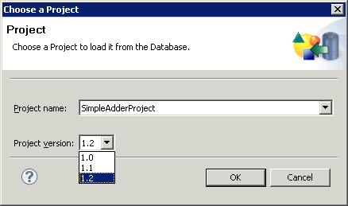

3.4.5 Opening Projects
- To open a Project from the database, select:
. - If you haven't already logged into the database, a dialog will appear to ask you to do so. See the previous section 3.3.1 for details.
- Choose the Project you want to open from the combo box in the dialog which appears (3.6).
Figure: Open Project from Database
|  |
- If the Project has more than one version, choose which version you want to open. For more information on Project versions, see the section later 3.4.11.
- The Project is opened in the ITE .
Copyright BREDEX GmbH 2011. Made available under the Eclipse Public License v1.0.